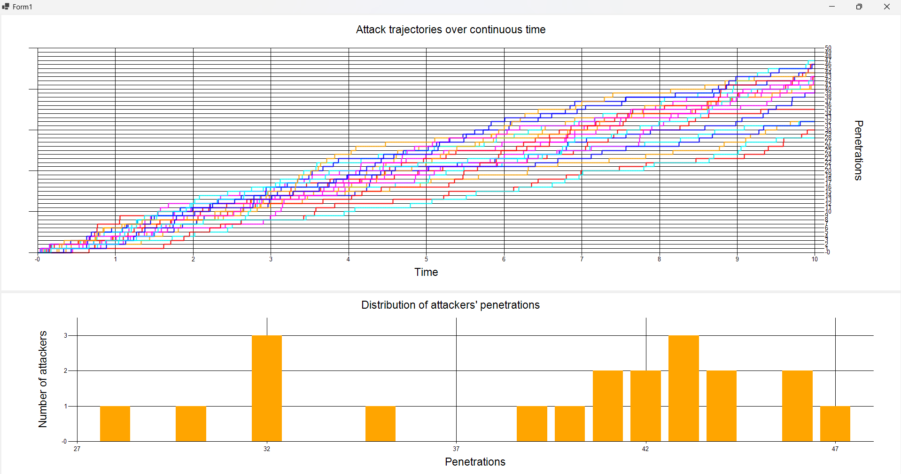

To formally illustrate why the median minimizes the sum of absolute deviations, consider a set of ordered data points \( x_1 \leq x_2 \leq \dots \leq x_n \) and let \( c \) be any value.
The function we are interested in minimizing is:
\( S(c) = \sum_{i=1}^{n} |x_i - c| \).
This is the sum of the absolute differences between each data point \( x_i \) and a chosen point \( c \).
To simplify, notice that the absolute value function has a characteristic "kink" at the data points \( x_i \). The absolute deviation function \( |x_i - c| \) is piecewise linear, with different slopes depending on whether \( c \) is less greater than \( x_i \):
At each data point, the derivative changes discontinuously.
To minimize \( S(c) \), we can examine how the sum of the slopes behaves as \( c \) varies:
Therefore, the median is the value of \( c \) where the sum of absolute deviations \( S(c) \) reaches its minimum.
When we talk about "location" or "central tendency" in statistics, we refer to a measure that summarizes a set of data by identifying a central point within the distribution. Here are various ways to define location statistics, showcasing how these ideas can lead to potential generalizations.
The arithmetic mean (or average) is the sum of all values divided by the number of values:
\[ \text{Mean} = \frac{1}{n} \sum_{i=1}^n x_i \]
Generalization: Change the linear combination of the data points, such as using weighted means or power means (including the geometric mean as a special case). This allows us to adjust the sensitivity of the mean to different portions of the data.
The median is the value that separates the data into two equal parts: 50% of values are below and 50% above:
\[ \text{Median} = \text{middle value of sorted data} \]
Generalization: Quantiles extend the idea to values that divide the distribution into arbitrary proportions (e.g., quartiles, deciles), and trimmed or Winsorized means, where certain portions of the data are ignored or down-weighted.
The mode is the most frequent value in the dataset:
\[ \text{Mode} = \arg\max_x f(x) \quad \text{where } f(x) \text{ is the frequency function.} \]
Generalization: Kernel density estimates or smoothers can generalize the idea of the mode to non-discrete data. In continuous distributions, the mode can be extended to the local maxima of probability density functions.
For positive numbers, the geometric mean is the nth root of the product of all values:
\[ \text{Geometric Mean} = \left( \prod_{i=1}^n x_i \right)^{1/n} \]
Generalization: One can use different exponents or other functional transformations of data points before averaging, leading to other means (e.g., harmonic mean).
The harmonic mean is the reciprocal of the arithmetic mean of the reciprocals of the data:
\[ \text{Harmonic Mean} = \frac{n}{\sum_{i=1}^n \frac{1}{x_i}} \]
Generalization: Different powers of the data could be used to emphasize certain parts of the distribution (e.g., power means), or harmonic means could be generalized to matrix-valued functions in multivariate cases.
The midrange is the average of the maximum and minimum values:
\[ \text{Midrange} = \frac{\max(x) + \min(x)}{2} \]
Generalization: Instead of using the minimum and maximum, one could define central tendencies based on any percentile pairs (e.g., the average of the 5th and 95th percentiles).
The trimmed mean is the mean after removing the highest and lowest values (or a percentage of them):
\[ \text{Trimmed Mean}_\alpha = \frac{1}{n-2\alpha n} \sum_{i=\alpha n}^{(1-\alpha) n} x_i \]
Generalization: Varying the percentage of trimming or incorporating a smooth weighting scheme (such as a Tukey biweight) generalizes this idea to robust statistics that reduce the influence of outliers.
Similar to trimmed means, but instead of removing values, extreme values are replaced by the closest retained values:
\[ \text{Winsorized Mean}_\alpha = \frac{1}{n} \sum_{i=1}^{n} \tilde{x}_i \] where \(\tilde{x}_i\) are adjusted values after Winsorization.
Generalization: One can devise various ways to replace extreme values or even blend the Winsorized values with the original ones, creating hybrid schemes.
These are linear combinations of order statistics (e.g., percentiles). The median, trimmed means, and midrange are all special cases of L-statistics:
\[ L(x_1, x_2, ..., x_n) = \sum_{i=1}^{n} c_i x_{(i)} \]
Generalization: Changing the coefficients \(c_i\) allows infinite possible central tendencies, such as weighting certain parts of the distribution more or less.
These estimators generalize the idea of a mean by minimizing a robust loss function \(\rho(x)\):
\[ \hat{\theta} = \arg\min_\theta \sum_{i=1}^n \rho(x_i - \theta) \] where \(\rho(x)\) is a function chosen for robustness to outliers (e.g., Huber loss).
Generalization: The choice of \(\rho(x)\) leads to different estimators, and a virtually infinite number of such functions exist (e.g., Tukey’s biweight, Huber loss, Hampel's three-part function).
In a geometric context, the centroid is the arithmetic mean of all points in a set, such as the center of mass in a physical system.
Generalization: The idea of "center" can be generalized to different spaces, including higher-dimensional spaces, manifolds, and graphs. One could use different definitions of distance to define alternative centers (e.g., the Fermat point or centroid on a graph).
Any function that aggregates or transforms the data could define a new measure of central tendency. For example, applying a nonlinear function \(f(x)\) to the data and then applying a traditional measure like the mean or median:
\[ \text{Location}_f = f^{-1}\left( \frac{1}{n} \sum_{i=1}^n f(x_i) \right) \]
Different choices of \(f(x)\) lead to infinite possibilities (e.g., logarithmic transformation leading to the geometric mean, etc.).
The choice of distance metric fundamentally alters the concept of central tendency. For example, using \(L_p\) norms or Mahalanobis distance leads to different definitions of central points in multivariate contexts.
Machine learning algorithms often define centers based on data clustering or embeddings. Methods such as k-means clustering, which seeks to minimize within-cluster variance, define a center based on the underlying structure of the data rather than strict statistical formulas.
The concept of "location" in statistics is versatile and can be extended infinitely by modifying functions, distance metrics, and the underlying data structures. This ability to generalize opens a rich landscape of methods for understanding the central tendencies within diverse datasets.
Refine your SDE simulator to simulate a continuous time process where we can have an attack (indicated with a jump of +1) at any time with a constant rate of attack. To create the approximation of time continuity subdivide your reference temporal window into numerous intervals of vanishing size dt = 1/n and to each infinitesimal interval assign a probability of a +1 "jump" (attack success) equal to Lambda * dt, where Lambda is a simulation parameter, having the meaning of expected total number of attacks in the reference period.
Most of the code is the same as the previous homework. Below there are the only few relevant changes in this homework.
New variables must be initialised for the simulation: Lambda, dt, number of intervals and the total reference period.
The code below shows the new version of the function that simulates the penetrations of each attacker: if the randomly generated number is less than Lambda * dt, the number of penetrations made by the current attacker is increased by 1.
The screenshot below shows the output of the realized program, using the parameters m = 20 for the attackers, Lambda = 4, number of intervals = 1000, total time = 10, dt = 0.01.
{kind=link}